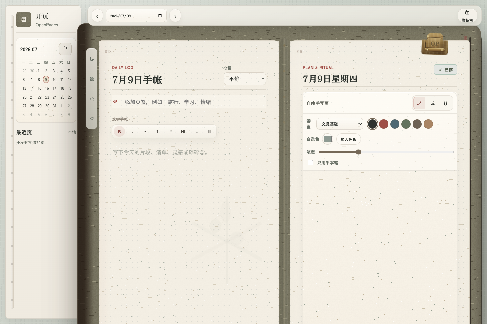
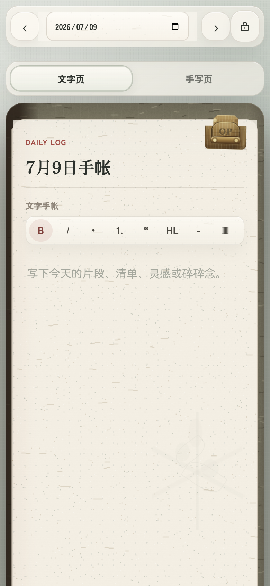

像 TN 一样先打开封面，再慢慢写一页。电脑打字排版，移动端手写记录，本地优先。


手帐应该允许空白、乱涂、贴纸和碎碎念。记录生活，不是每天逼自己完成 KPI。
页面把大面积空间还给用户，不把待办和指标塞满。
先打开封面，再进入内页，保留一点写手帐的仪式感。
内容默认存在本机，导入导出自己掌控。
模板、贴纸、主题都可以由社区扩展。
如果你也讨厌“连续打卡 999 天”的压力，这个项目可能适合你。
我想模拟的是纸张、皮封面、黄铜夹、印章、翻开动作和真实文具的层次。
质感会继续打磨，目标是“打开就想写”。
不是只做一张好看的壳。目标是电脑端能认真编辑，移动端能随手写、贴、回看。
日页、子弹笔记、周计划、记忆拼贴、情绪记录，都应该打开就能写，而不是只有一个标签名。
我希望基础功能开放，让项目可持续盈利，但不把日记和隐私绑成强订阅。